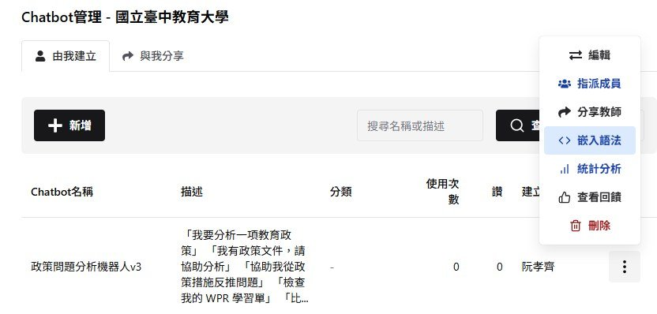
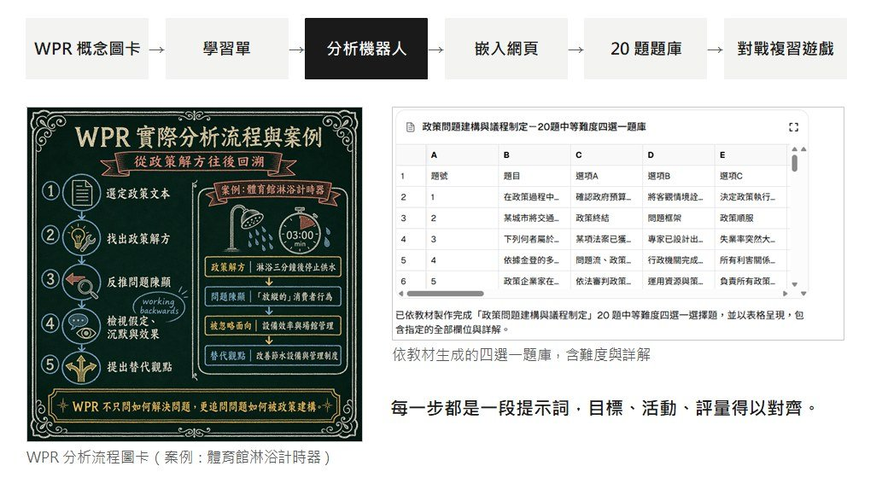

教育政策分析備課實例
為什麼把課程機器人放在校內平台
校內平台
資料留在校內，學生對話紀錄的蒐集與保存較符合研究倫理審查的要求。
課程化管理
可匯入學生、指派成員、分享給其他教師，使用場域與對象清楚。
隨處可用
可放進手機，課堂中直接開啟。
可以分析
後台有統計分析與查看回饋，並可依班級與日期匯出對話紀錄。


前一年的課程機器人分散在 Gem、POE 等不同平台；今年整合到同一個入口。
整理自阮孝齊，AI 輔助備課與課堂應用簡報（2026 年 10 月）。
教育政策分析備課實例
用提示詞串起整條教材鏈


流程依序為 WPR 概念圖卡、學習單、分析機器人、嵌入網頁、20 題題庫與對戰複習遊戲。每一步都是一段提示詞，讓目標、活動與評量能夠對齊。
教育政策分析備課實例
教材整理的輸入資料
課程教材
政策問題建構與 WPR 的概念、分析步驟與案例，事先整理成文件或轉成 md 檔。
本次政策文本
選定一份政策文件，保留發布機關、日期與原文。
課堂條件
學生程度、課堂時間，以及預期完成的學習任務。
WPR 是什麼Bacchi 的 WPR（What's the Problem Represented to be?）主張從政策提出的解方，往回讀出政策把什麼形構成問題：「我們建議要做的事情，即代表我們認為某件事情需要改變。」
Bacchi, C. (2009). Analysing policy: What's the problem represented to be? Pearson. 中文引文整理自陳宏彰（2024）。
教育政策分析備課實例
步驟一：政策概念圖卡
請依據附件整理 [WPR 的分析步驟]
請製作成 5 張投影片
請一張一張製作圖片，首先是投影片 1
教師核對：先確認概念與文字正確，再處理圖像呈現。圖片中的中文字也要逐字檢查。

來源：阮孝齊，教育政策分析課程操作稿（2026 年 9 月）。右圖為生成的第一張圖卡。
教育政策分析備課實例
步驟二：將圖卡帶入風格
請依照附件風格，製作 [WPR 實際分析流程與案例] 圖片
圖卡內容
五個步驟：選定政策文本、找出政策解方、反推問題陳顯、檢視假定與沉默效果、提出替代觀點；以「體育館淋浴計時器」為案例。
教師核對
步驟是否清楚、案例是否一致、圖中文字是否正確。

來源：阮孝齊，教育政策分析課程操作稿（2026 年 9 月）。
教育政策分析備課實例
步驟三：學習單製作
依據 [WPR 實際分析流程與案例] 修改學習單內容，保留批判思考部分

教師決定要留下什麼
學習單要讓學生留下自己的判斷與理由。保留批判思考的要求，最後落在「先寫自己的判斷」「檢查機器人的說法」「說明修改理由」三類欄位。
這頁提到的學習單，可在學習單分享頁線上填寫、列印或下載 Word 檔。
來源：阮孝齊，教育政策分析課程操作稿（2026 年 9 月）。
教育政策分析備課實例
學習單的每個欄位，留下不同的證據
| 學習節點 | 學生要留下的內容 |
|---|---|
| 使用 AI 前 | 初步的問題判斷與政策原文 |
| 檢查 AI 回應 | 機器人的關鍵說法、判斷理由與文本依據 |
| 同儕挑戰後 | 是否納入不同觀點，以及理由 |
| 形成最後問題句 | 修正內容與修改原因 |
| 課後查證 | 資料來源與支持程度 |
設計重點欄位順序就是學生的思考順序：先有自己的初判，後面的修正才有比較的基準。
這頁提到的學習單，可在學習單分享頁線上填寫、列印或下載 Word 檔。
來源：講者的政策問題建構個人學習單、小組學習單與組間互評挑戰單。
教育政策分析備課實例
步驟四：政策問題分析機器人
我需要設計協助大學生完成政策問題分析學習單的機器人，請給我提示詞，請參考附件，避免過多的反覆詢問


接著到 AITE 後台
新增 Chatbot，貼上剛才產生的提示詞，上傳教材與學習單；完成後由「嵌入語法」複製程式碼。
教材與學習單共同界定機器人的任務。測試時可輸入「什麼是政策問題？」與「政策提出強化師資，能證明師資不足嗎？」，看回應是否有教材依據。
來源：阮孝齊，教育政策分析課程操作稿（2026 年 9 月）。
教育政策分析備課實例
步驟五：製作手機可用的網頁
我需要單純內嵌一個手機可以使用的對話框，語法如下 [貼上 AITE 的嵌入語法]
部署
下載 HTML 檔，到 Netlify 網站直接上傳，即可取得網址。
另一種方式
在 AITE 匯入學生、指派機器人，學生登入後使用，教師可查看對話紀錄。


來源：阮孝齊，教育政策分析課程操作稿（2026 年 9 月）。
教育政策分析備課實例
步驟六：把教材轉成題庫
你是教育專家，需要依據教材進行命題。出題格式為四選一選擇題，欄位依序為 [題號、難度、題目、選項 A、選項 B、選項 C、選項 D、正確答案、詳解]，20 題，比例中等，需要表格

教師核對
題目是否對應教材？正確答案與詳解是否一致？
例題
Raiffa 所說的「第三類型錯誤」是指？
正確答案：正確的政策，解決錯誤的問題。
對照 L4 講義的第三類型錯誤。
來源：阮孝齊，教育政策分析課程操作稿（2026 年 9 月）。原稿要求 20 題，目前遊戲收錄 16 題。
教育政策分析備課實例
步驟七：把題庫做成複習遊戲
請依照這個題庫製作網頁小遊戲，16:9，有對戰功能，待答時間要合理，可以在觸控大屏上進行，給我 HTML
題庫提供內容，遊戲提示詞交代使用方式與操作條件。

完成品政策魔王討伐戰 https://cool-cobbler-8762c0.netlify.app/
每組一台裝置、每題 25 秒，答對讓魔王扣血，答錯或超時魔王回血；魔王血量剩一半時進入「往後回溯」的政策情境題，答錯的題目會再出現。
來源：阮孝齊，教育政策分析課程操作稿（2026 年 9 月）。
教育政策分析備課實例
一次修改的提示詞示範
請依據附件 HTML 修改遊戲。概念題維持 25 秒，情境分析題改為 45 秒。
請同步更新倒數計時與畫面說明，保留原有題目、答案、詳解與計分規則，提供修改後的完整 HTML。
修改後確認
情境題的倒數、畫面說明與計分是否一致。
寫修改提示詞的原則
說清楚要改什麼、哪些不能改，以及要交回完整檔案。
此修改提示詞為本次工作坊的示範設計。
教育政策分析備課實例
教師在各項應用中的判斷
圖卡與學習單
概念是否正確？欄位能否留下學生自己的理由？
分析機器人
回應是否有教材依據？引導是否配合學習任務？
題庫與遊戲
題目、答案與規則是否合適？回饋是否有助於後續講解？
| 工具 | 可蒐集的資料 |
|---|---|
| 複習遊戲 | 作答結果與錯題；選擇理由需另行回報 |
| AITE 對話 | 提問、追問與回應不同說法的訊息 |
| 個人學習單 | 初稿、文本依據及修正理由 |
| 小組與互評資料 | 不同觀點，以及採納或保留的理由 |